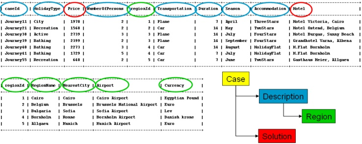

jcolibri.test.test4.Test4
jcolibri.test.test4.Test4
|
||||||||||
| PREV CLASS NEXT CLASS | FRAMES NO FRAMES | |||||||||
| SUMMARY: NESTED | FIELD | CONSTR | METHOD | DETAIL: FIELD | CONSTR | METHOD | |||||||||
java.lang.Object
public class Test4
This example shows how to manage a complete case with solution and execute some adaptation methods. Now the case has also a solution bean with a few attributes. That way, the structure of the case is:
Case
|
+- Description
| |
| +- caseId
| +- HollidayType
| +- Price
| +- NumberOfPersons
| +- Region
| | |
| | +- regionId
| | +- regionName
| | +- NearestCity
| | +- Airport
| | +- Currency
| +- Transportation
| +- Duration
| +- Season
| +- Accomodation
| +- Hotel
|
+- Solution
|
+- id
+- price
+- hotel
Solution is stored in the TravelSolution bean (CaseComponent).
This bean could be saved into a separate table, but here were are going to show how to use the same table than the description.
This way, the mapping is:

To configure these mapping we must modify or create the following files:
<SolutionMappingFile>jcolibri/test/test4/TravelSolution.hbm.xml</SolutionMappingFile> <SolutionClassName>jcolibri.test.test4.TravelSolution</SolutionClassName>
<hibernate-mapping default-lazy="false">
<class name="jcolibri.test.test4.TravelSolution" table="travel">
<id name="id" column="caseId"></id>
<property name="price" column="Price"/>
<property name="hotel" column="Hotel"/>
</class>
</hibernate-mapping>
This method also shows how to perform a simple adaptation based in the DirectProportion method that modifies the value of an attribute of the solution depending on the value in the query and retrieved case of other attribute of the description.
TravelDescription,
Region,
TravelSolution,
NumericDirectProportionMethod| Constructor Summary | |
|---|---|
Test4()
|
|
| Method Summary | |
|---|---|
void |
configure()
Configures the application: case base, connectors, etc. |
void |
cycle(CBRQuery query)
Executes a CBR cycle with the given query. |
static void |
main(java.lang.String[] args)
|
void |
postCycle()
Runs the code to shutdown the application. |
CBRCaseBase |
preCycle()
Runs the precyle where typically cases are read and organized into a case base. |
| Methods inherited from class java.lang.Object |
|---|
clone, equals, finalize, getClass, hashCode, notify, notifyAll, toString, wait, wait, wait |
| Constructor Detail |
|---|
public Test4()
| Method Detail |
|---|
public void configure()
throws ExecutionException
StandardCBRApplication
configure in interface StandardCBRApplicationExecutionException
public CBRCaseBase preCycle()
throws ExecutionException
StandardCBRApplication
preCycle in interface StandardCBRApplicationExecutionException
public void cycle(CBRQuery query)
throws ExecutionException
StandardCBRApplication
cycle in interface StandardCBRApplicationExecutionException
public void postCycle()
throws ExecutionException
StandardCBRApplication
postCycle in interface StandardCBRApplicationExecutionExceptionpublic static void main(java.lang.String[] args)
args -
|
GAIA - Group for Artificial Intelligence Applications http://gaia.fdi.ucm.es |
|||||||||
| PREV CLASS NEXT CLASS | FRAMES NO FRAMES | |||||||||
| SUMMARY: NESTED | FIELD | CONSTR | METHOD | DETAIL: FIELD | CONSTR | METHOD | |||||||||